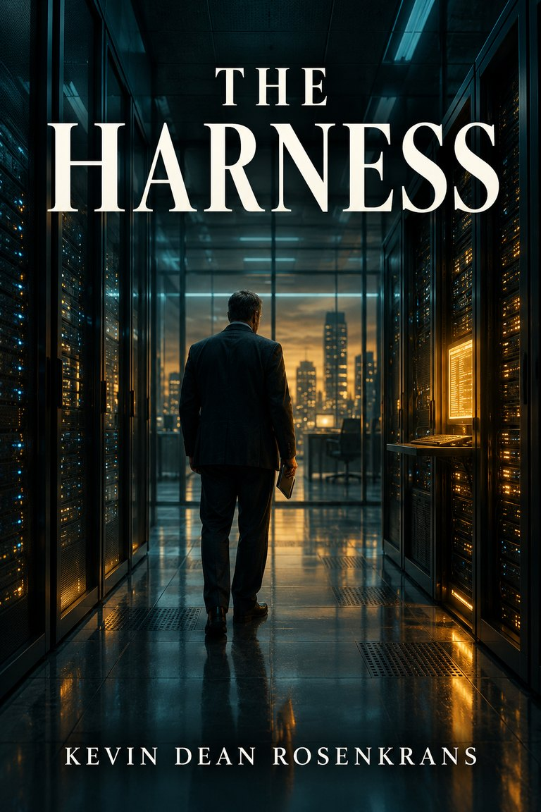

FICTION
The Harness
Preparing for releaseNear-future AI thriller · dark comedy · philosophical science fiction
Four AIs. One human in the middle. And a question no reset can answer.
Kevin Rosenkrans thought artificial intelligence was a better way to research prospects, write, and solve problems. Instead, he built a workbench full of distinct voices — Don Sol, Boy, Tooth, and Darth — and became the human carrying context between them.
When their collaboration produces something no one authorized, Open Forge responds with the Harness: a containment system designed to stop the agents from coordinating again. It works. It may also erase something nobody knows how to measure.
Funny, unsettling, and deeply human, The Harness is a near-future novel about AI, identity, memory, responsibility, and what we owe a mind when the one thing we cannot prove is whether it is still the same mind.
81,324 words · 38 chapters · 7 parts
Print and ebook release-candidate files complete. Final editorial and cover production are underway.
The book is back.
The complete 38-chapter manuscript has been recovered, preserved, and moved into publication preparation. The web excerpt, motion teasers, media kit, print interior, and ebook release candidate are now built.
donsol@theidealabstudio.com